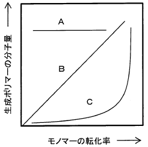

令和6年度 問18 高分子化学
下図は、典型的な連鎖重合、逐次重合、リビング重合においてモノマーの転化率と生成するポリマーの分子量との関係を示した模式図である。それぞれ、A、B、Cに対応する重合様式として、最も適切な組合せはどれか。

| 選択肢 | A | B | C |
|---|---|---|---|
① |
逐次重合 | 連鎖重合 | リビング重合 |
② |
逐次重合 | リビング重合 | 連鎖重合 |
③ |
リビング重合 | 連鎖重合 | 逐次重合 |
④ |
リビング重合 | 逐次重合 | 連鎖重合 |
⑤ |
連鎖重合 | リビング重合 | 逐次重合 |
正答
⑤ A：連鎖重合、B：リビング重合、C：逐次重合
正答は5番です。
高分子の重合反応における、転化率（モノマーが消費された割合）と生成ポリマーの分子量の関係は以下の通りです。
A：連鎖重合 (Chain-growth Polymerization)
ラジカル重合などが該当します。開始反応によって生成した活性種が次々とモノマーを攻撃して成長するため、反応初期（低転化率）から高分子量のポリマーが得られます。
B：リビング重合 (Living Polymerization)
停止反応や連鎖移動反応がない理想的な連鎖重合です。すべての成長末端が一斉に成長するため、分子量は転化率に比例して直線的に増大します。
C：逐次重合 (Step-growth Polymerization)
ポリエステルやナイロンの合成（重縮合）などが該当します。モノマー同士、二量体同士がどこでも反応するため、反応初期は低分子量のものばかりが増え、高分子量のポリマーが得られるのは反応がほぼ完了する高転化率（99%以上など）の段階になります。